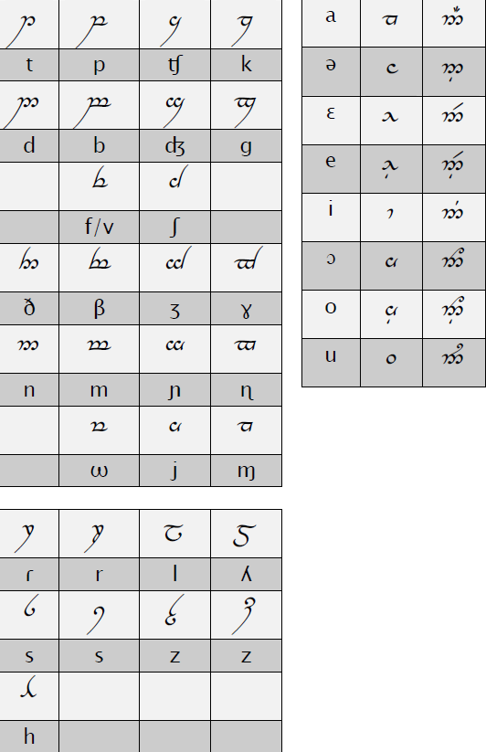

Aquesta pàgina recull el treball de David Carrascal Rierola sobre com transcriure fonèticament el català amb l'alfabet tengwar.
S’ha intentat que tots els dialectes de la llengua es trobin representats i puguin treballar amb el mode català sense dificultats.
A continuació presentem les correspondències tengwar adaptades al català. Vegeu el document en detall per a les equivalències dels diftongs i semivocals.
zE51E 2(`V,O jL zHjL7( eJ5$(i1O 4(zTjyO jL zU`Ëj q7UwUzO7D `V5Utw7EwjLi iMe7Tt(R5, `Ëj, `ËzUy(R, `B q7(iTqG1E t(^j1O, `C5%t(, `ËieJ7iD4(i 2(7H`V, `Ë j#4(, `B `Ëji zUtw(71T`Ë `Ë5 qOi1U7( 4(ji v(^iM, `B t($f( 4( jL, yEi
Aquesta línia és un exemple fictici. Pots escriure aquí les teves pròpies transcripcions usant la font Tengwar.
Autor: David Carrascal Rierola – Herumírë
Contacte: herumire@gmail.com